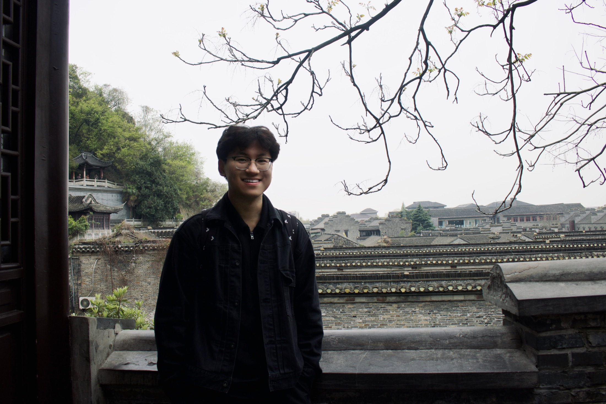

Taian Shi — 石泰安
I first started taking photos in fifth grade, using my sister’s old iPhone 5. During trips to Jiuzhaigou and the UK, I would take pictures of almost everything: landscapes, streets, people, and small details that caught my attention. At first, I simply wanted to keep the things I thought looked beautiful. Over time, photography became a way for me to slow down and pay closer attention to everyday life.
In high school, my school offered a photography class, where I began learning more systematically. My first camera was a Canon EOS 750D. It travelled with me, helped me practice, and taught me to wait for the right light or a quieter moment. Today, I mainly shoot with a Fujifilm X-S20 and an Olympus Zoom-105 film camera. I enjoy photographing nature, cities, film, and travel. I am especially drawn to the less staged parts of an image: changing weather, ordinary people, passing time, and the atmosphere of a place.
Yunnan is one of my favorite places to return to. I like traveling slowly and spending enough time in one place to get a feel for its rhythm. One of my clearest memories is from a guesthouse in Dali: its rooftop looked toward Erhai Lake, with the Cangshan Mountains behind it. In the mornings and evenings, I would climb upstairs and sit there for a while, watching the light change across the lake and sky. It was simple, quiet, and unforgettable.
Alongside these interests, I studied International Business at the University of Liverpool. My academic curiosity centers on people, organizations, technology, and the changing future of work—especially questions of leadership, employee well-being, and how artificial intelligence shapes everyday working life. I hope to pursue a path that remains intellectually serious while staying close to the human details that first drew me to photography: how people live, adapt, work, and find meaning.
This website is a home for those different parts of me. Here, I share photographs, travel notes, blog posts, vlogs, books, ideas, and small discoveries from ordinary life. Beyond the camera, I enjoy music, reading, films, and working out. I do not see these interests as separate from my academic and professional aspirations; together, they make up the way I move through the world—curious, observant, open to new places, and always looking for something worth remembering.
Thank you for being here. I hope you find something that makes you pause, look again, or see the familiar a little differently.
我最早开始拍照，是在小学五年级。那时我用姐姐淘汰下来的 iPhone 5，在九寨沟和英国旅行时随手记录风景、街道和身边的人。起初只是觉得“好看就拍下来”，后来慢慢发现，摄影让我开始更认真地观察生活：一束光落在墙上、一个陌生城市傍晚的颜色、路边偶然遇到的人和事，都会成为值得记住的瞬间。
高中时，学校开设了摄影课，我第一次比较系统地接触到摄影。我的第一台相机是佳能 EOS 750D，它陪我拍了很多旅行，也陪我练习如何慢下来、耐心地看。现在我主要使用 Fujifilm X-S20 和 Olympus Zoom-105 胶片相机，拍摄自然、城市、胶片和旅行记录。我喜欢照片里不那么刻意的部分: 天气、光线、人群和时间留下来的痕迹。
云南是我最喜欢的地方之一。比起“打卡”，我更喜欢在那里慢慢生活几天。云南的节奏很舒服，风景也总是在不经意间出现。印象最深的是一次住在大理的民宿，屋顶背靠苍山，面前就是洱海。早晨或傍晚，我会自己爬上去坐一会儿，看湖面和天空一点点变化。那种安静的感觉，到现在还记得。
除了创作，我也在英国利物浦大学学习国际商务。我的学术兴趣主要围绕人、组织、技术与未来工作，尤其关注领导力、员工幸福感，以及人工智能如何影响人们的日常工作。我希望未来能够在学术与职业道路上持续探索这些问题，同时始终保留摄影带给我的那种对细节、关系与真实生活的敏感。
这个网站收集了不同面向的我：摄影作品、旅行记录、blog、vlog、书籍、思考，以及生活中偶然发现的美好。镜头之外，我也喜欢音乐、阅读、电影和健身。我并不认为这些兴趣与学术或职业追求彼此分离；它们共同构成了我理解世界的方式——保持好奇，认真观察，愿意走向陌生的地方，也愿意记住那些值得被留下的瞬间。
谢谢你的到来。希望这里的某一张照片、一个故事或一段思考，能让你稍稍停留，并重新看见熟悉生活中的一点不同。